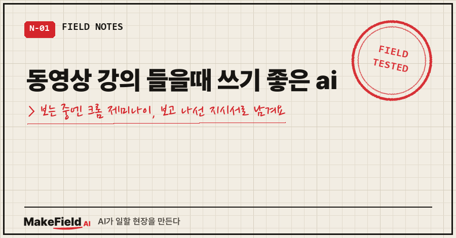
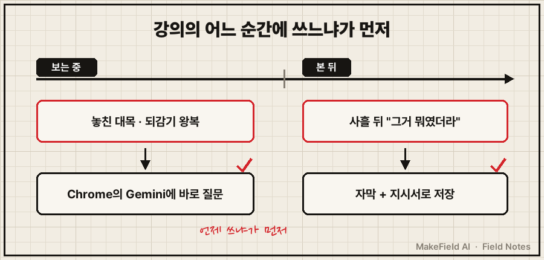
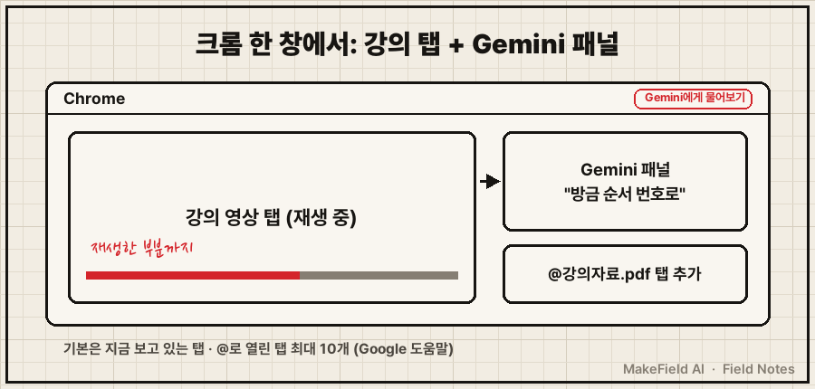

동영상 강의 들을때 쓰기 좋은 ai는 언제 쓰느냐로 갈려요. 보는 도중 막힌 대목을 바로 묻고 싶으면 크롬 옆에 붙는 'Chrome의 Gemini', 다 보고 나서 다시 안 볼 자료로 남기려면 자막을 AI에 넣어 지시서로 받는 방식이 맞습니다.
Google 공식 도움말(2026년 10월 22일 확인) 기준, Chrome의 Gemini는 만 18세 이상 이용 지역에 한국이, 지원 언어에 한국어가 들어 있고, 미디어 웹사이트에서 이미 재생한 오디오·동영상에 대해 질문할 수 있어요.
제조 현장 엔지니어로 15년을 보냈고, 요즘은 AI 강의 영상을 꽤 챙겨 봐요. 해 보니 "어떤 AI가 좋냐"보다 "강의의 어느 순간에 쓰냐"가 먼저더라고요.
1. 강의 보다가 이런 장면에서 멈추죠
이 검색어로 들어오시는 분들, 대개 이 셋 중 하나일 거예요.
- 강사가 방금 한 말을 놓쳐서 스크러버를 앞뒤로 왔다 갔다
- 다 보고 사흘 뒤 "그거 뭐였더라" 하면서 처음부터 다시 재생
- 요약 도구에 링크를 넣었더니 결론 몇 줄만 남고 정작 쓰려던 순서는 빠짐
셋 다 제가 했던 짓이에요. 좋은 영상일수록 왕복이 더 잦았어요..
2. 동영상 강의 들을때 쓰기 좋은 ai가 갈리는 이유
원인은 두 문제가 섞여 있어서예요. 첫째는 보는 중에 바로 답이 필요한 문제, 나머지 둘은 본 다음에 남는 게 없는 문제죠. 한 도구로 둘 다 풀려니 어느 쪽도 시원하지 않았어요.

공식 문서로 확인되는 선택지를 시점별로 나누면 이래요.
| 시점 | 쓸 AI | 공식 조건 |
|---|---|---|
| 보는 중 | Chrome의 Gemini | 컴퓨터(Windows·Mac·Chromebook Plus), 최신 Chrome 로그인, 시크릿 모드 불가, 일부 사용자부터 순차 제공 |
| 보는 중 | 유튜브 자체 대화형 AI | 일부 언어·지역, 일부 동영상에만 버튼 표시 |
| 본 뒤 | 쓰던 AI·NotebookLM + 자막 | 자막이 있는 영상이어야 함 |
(→ https://support.google.com/gemini/answer/16283624?hl=ko , → https://support.google.com/youtube/answer/14110396?hl=en)
유튜브 자체 AI는 버튼이 뜬 영상에서만 되니, '보는 중'은 Chrome의 Gemini 기준으로 볼게요.
3. 보는 중: Chrome의 Gemini로 질문하는 4단계
먼저 밝혀 둘게요. 이 경로는 제가 직접 써 본 게 아니라 Google 도움말 원문으로 확인한 단계예요. 저는 영상 내용을 뽑을 때 제미나이를 썼고, 크롬 패널은 '보는 중' 문제 때문에 찾아본 길입니다.
- 컴퓨터에서 Chrome을 최신 버전으로 올리고 구글 계정으로 로그인한다. 시크릿 창에서는 안 돼요.
- 브라우저 상단의 Gemini에게 물어보기 아이콘을 누른다. 처음엔 화면 안내에 따라 동의합니다.
- 강의 영상을 틀어 둔 탭에서 그대로 질문한다. 기본적으로 지금 보고 있는 탭 내용으로 답해요.
- 강의 자료(PDF 등)를 다른 탭에 열어 뒀다면
@를 입력해 그 탭을 질문에 붙인다. 최대 10개까지예요.
질문은 이렇게 '형태'를 콕 집어 주는 게 좋아요.
방금 강사가 설명한 작업 순서를 번호로 다시 정리해 줘.
지금까지 나온 "이럴 땐 이렇게" 판단 기준만 따로 뽑아 줘.도움말 문구가 "이미 재생한" 동영상이에요. 안 본 뒷부분 요약보다 방금 지나간 대목을 다시 묻는 용도가 문서 표현에 맞습니다.

영상 질문이 안 먹히면 주소창에 아래를 넣고 미디어 이해 스위치가 켜져 있는지 보세요. 기본값은 켜짐이에요.
chrome://settings/ai/gemini4. 본 뒤: 다시 안 보려면 지시서로 남겨요
보는 중에 물은 답은 그 자리 이해용이에요. 사흘 뒤 다시 안 열려면 따로 남겨야 합니다.
제가 정착한 방법은 자막을 통째로 AI에 넣고 "순서와 판단 기준을 살린 지시서로 바꿔 달라"고 시킨 뒤, 내 AI의 지식 파일에 넣어 두는 거예요. 처음엔 지시를 대충 줬다가 매끈한 요약만 받았어요. 자세한 순서는 6절 첫 번째 글에 있습니다.
5. 제대로 됐는지 확인하는 법
- 보는 중 답 검증: 패널이 짚은 대목을 유튜브 스크립트 표시에서 찾아보세요. 스크립트 줄을 누르면 그 장면으로 이동해서 바로 대조돼요(→ https://support.google.com/youtube/answer/15930243?hl=ko).
- 본 뒤 결과 검증: 번호 붙은 단계와 판단 기준이 있으면 지시서, 없으면 그냥 요약이에요.
- 한계: 말 없이 화면으로만 보여 주는 시연 구간은 자막만 넣는 방식으론 반쪽이었어요. 이런 영상은 6절 두 번째 글을 보세요.
6. 같은 증상, 다른 경우
- 영상을 요약 말고 '내 AI 지식'으로 심는 순서 → 유튜브 강의 AI로 정리하는 법
- 화면 시연이 핵심인 강의라 자막만으론 부족할 때 → 유튜브 영상 가장 정리 잘하는 ai
- '스크립트 표시' 버튼이 안 보이거나 NotebookLM에 링크가 안 들어갈 때 → 유튜브 ai정리하는법
Q. 크롬에 Gemini 아이콘이 안 보여요.
도움말 기준 Chrome의 Gemini는 일부 사용자부터 순차 제공돼요. 최신 버전·로그인·시크릿 창 여부·기기 언어를 차례로 보세요.
Q. 유튜브 말고 다른 강의 사이트에서도 되나요?
도움말은 유튜브로 한정하지 않고 "미디어 웹사이트"라고 적어요. 사이트 목록은 없어서 쓰는 강의 사이트에서 직접 물어보는 게 빠릅니다.
Q. 유튜브에 있는 AI 질문 버튼은 왜 안 보이죠?
공식 도움말상 일부 언어·지역, 일부 영상에만 나와요. 정확도가 다를 수 있다는 주의 문구도 있어요.
동영상 강의 들을때 쓰기 좋은 ai를 찾고 계셨다면, 다음에 놓친 대목이 나올 때 되감기 전에 패널에 먼저 물어보세요. 다 본 강의를 지시서로 바꿔 실제 일에 붙이는 과정은 makefield.ai에 정리해 두고 있어요.
출처
- Google Gemini 고객센터, Chrome의 Gemini 사용하기 (사용 조건·아이콘·현재 탭·@ 탭 10개·재생한 동영상 질문·미디어 이해 설정) → https://support.google.com/gemini/answer/16283624?hl=ko
- 같은 문서 영문판 (만 18세 이상 이용 지역 South Korea, 지원 언어 Korean) → https://support.google.com/gemini/answer/16283624?hl=en
- YouTube 고객센터, Learn about the conversational AI tool on YouTube → https://support.google.com/youtube/answer/14110396?hl=en
- YouTube 고객센터, 동영상 스크립트 보기 → https://support.google.com/youtube/answer/15930243?hl=ko
- 2026년 10월 22일 원문 확인
태그: #동영상강의들을때쓰기좋은ai #동영상강의AI #강의보면서AI #강의요약AI #크롬제미나이 #Chrome의Gemini #Gemini에게물어보기 #제미나이크롬 #유튜브강의AI #유튜브AI질문 #강의정리AI #AI공부법 #AI활용법 #생성형AI #MakeFieldAI